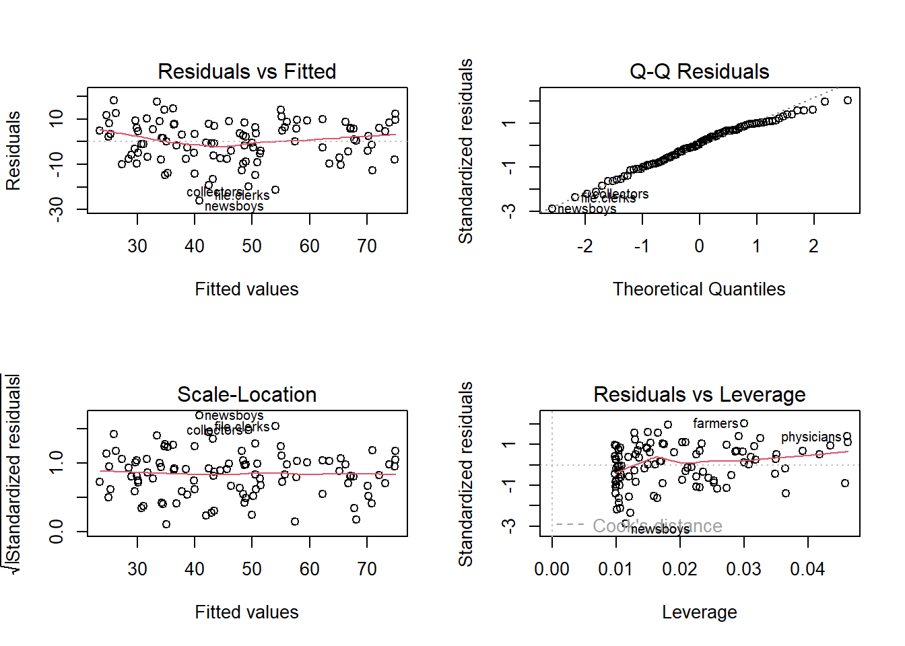
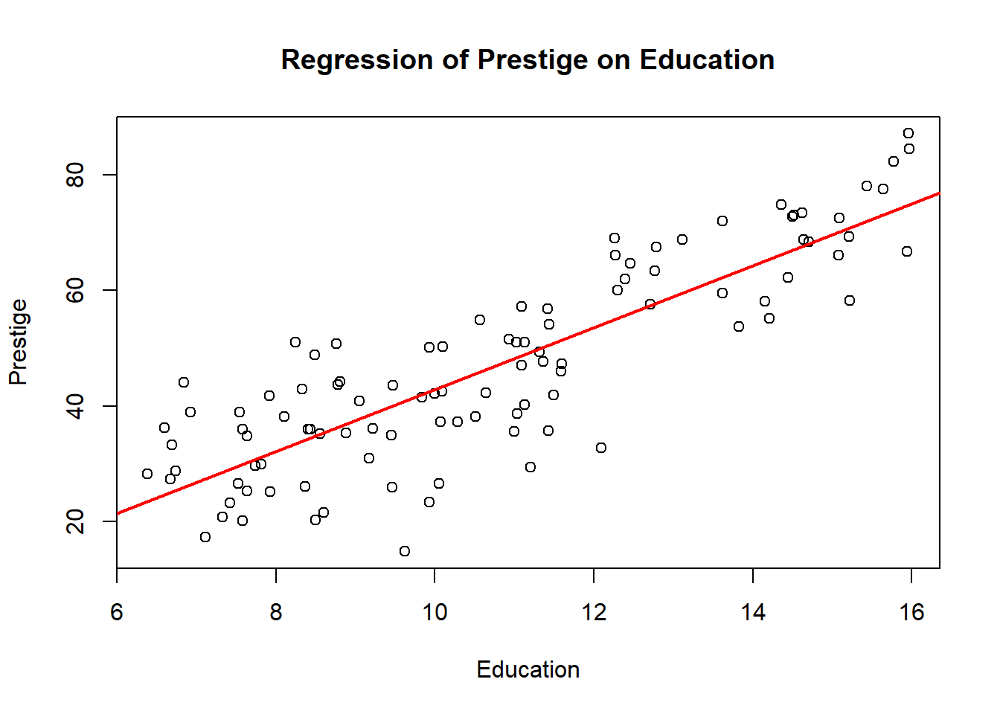

Linear regression aims to create a model that predicts or explains the dependent variable based on independent variables. It’s called “linear” because the relationship between the variables is modeled as a straight line or a plane in a multi-dimensional space.
Linear regression is widely used in various fields, including finance, economics, biology, and engineering, to understand relationships and make forecasts. It can be used for simple predictions or as a building block for more complex models.
5.0.1.1The Linear Regression Equation
The linear regression equation represents the expected relationship between the dependent variable and the independent variables. In its simplest form, the linear regression equation is:
\(y=\beta_0+\beta_1*x_1+\beta_2*x_2+ϵ\)
\(y\) is the dependent variable (the variable being predicted or explained).
\(\beta_0\)is the intercept (the value of \(y\) when all \(x_k\) values are zero).
\(\beta_1,\beta_2,\beta_3,...,\beta_k\) are the coefficients (representing the effect of each independent variable on \(y\)).
\(x_1,x_2,x_3,...,x_k\) are the independent variables (the predictors).
𝜖 is the error term (representing the variability not explained by the model).
The goal of linear regression is to find the values of \(\beta_1,\beta_2,\beta_3,...,\beta_k\) that minimize the sum of squared errors, which is the difference between the predicted values and the actual values.
5.0.1.2Assumptions of Linear Regression
Linear regression relies on several key assumptions. Violations of these assumptions can affect the validity and reliability of the model. The primary assumptions are:
Linearity: The relationship between the dependent variable and each independent variable must be linear. If the relationship is non-linear, linear regression may not be appropriate.
Independence: The observations must be independent of each other. This assumption is critical in cases where data may have a time-related structure or where observations could be correlated.
Homoscedasticity: The variance of the errors must be constant across different values of the independent variables. Uneven variance can lead to inaccurate estimates and biased statistical tests.
Normality of Errors: The residuals (errors) should be approximately normally distributed. This assumption is crucial for hypothesis testing and confidence intervals.
No Multicollinearity: The independent variables should not be highly correlated with each other. High multicollinearity can lead to unstable estimates and make it difficult to interpret the model.
These assumptions should be checked and validated to ensure the linear regression model’s robustness and reliability.
5.0.2 Fitting Linear Regression in R
To start with linear regression, you need to load the dataset into your R session. We’ll use the prestige dataset from the carData package, which contains information on various professions, including education, income, women, prestige, census, and type.
5.0.2.1Loading the Data
First, ensure that the carData package is installed and loaded, then load the prestige dataset.
# Install and load the carData package if neededif(!require(car)) {install.packages("car")}
Loading required package: car
Warning: package 'car' was built under R version 4.3.2
Loading required package: carData
Warning: package 'carData' was built under R version 4.3.2
library(carData)# Load the Prestige datasetdata("Prestige")
5.0.2.2 Fitting Simple Linear regression
To create a simple linear regression model in R, you can use the lm() function, which stands for “linear model.” The basic structure of the function is as follows:
# Fit a simple linear regression modelreg1 <-lm(prestige ~ education, data = Prestige)
In this example, prestige is the dependent variable, and education is the independent variable. The tilde ~ separates the dependent variable on the left from the independent variable(s) on the right. The data parameter specifies the dataset used for the model.
After fitting the model, you can use the summary() function to get detailed information about the linear regression model:
# Get a summary of the linear regression modelsummary(reg1)
Call:
lm(formula = prestige ~ education, data = Prestige)
Residuals:
Min 1Q Median 3Q Max
-26.0397 -6.5228 0.6611 6.7430 18.1636
Coefficients:
Estimate Std. Error t value Pr(>|t|)
(Intercept) -10.732 3.677 -2.919 0.00434 **
education 5.361 0.332 16.148 < 2e-16 ***
---
Signif. codes: 0 '***' 0.001 '**' 0.01 '*' 0.05 '.' 0.1 ' ' 1
Residual standard error: 9.103 on 100 degrees of freedom
Multiple R-squared: 0.7228, Adjusted R-squared: 0.72
F-statistic: 260.8 on 1 and 100 DF, p-value: < 2.2e-16
This command provides a comprehensive summary of the model, including coefficients, standard errors, t-values, and other statistics that help evaluate the model’s performance.
5.0.2.3Understanding the Model Summary
Here’s what the summary output contains and what each section means:
Call: This section shows the formula used to fit the model, confirming the variables and dataset.
Coefficients:
(Intercept): The estimated value of the dependent variable when the independent variable is zero.
Education: The estimated change in the dependent variable for each one-unit increase in education. A positive coefficient indicates a positive relationship.
Standard Errors: These values represent the uncertainty or variability in the coefficient estimates. Smaller standard errors indicate more precise estimates.
t-values and p-values:
t-values: Used to test the null hypothesis that the coefficient is zero. Higher absolute t-values suggest the coefficient is significant.
p-values: Indicate the probability of observing the estimated coefficient if the null hypothesis is true. Smaller p-values (e.g., less than 0.05) suggest statistical significance.
Residual Standard Error: Represents the typical size of the residuals (differences between observed and predicted values). Lower values suggest a better fit.
R-squared and Adjusted R-squared:
R-squared: Indicates the proportion of variance in the dependent variable explained by the independent variable(s). Higher R-squared values suggest a stronger relationship.
Adjusted R-squared: Adjusted for the number of predictors, providing a more accurate measure of fit for models with multiple independent variables.
F-statistic and p-value: These values test the overall significance of the model. A significant p-value indicates that the model provides a statistically significant relationship.
From the Above Summary Output:
The intercept in approximately -10.732, indicating the expected prestige when education in zero
The coefficient for education is 5.361, indicating that for every additional unit of education, prestige increases by 5.361
The model has R-squared value of 0.7228, suggesting that 72% of the variance in prestige is explained by education.
The p-value for education is very low, indicating that the relationship is statistically significant.
5.0.3Fitting a Multiple Linear Regression Model with Log-Transformed Variables
Multiple linear regression allows for more complex modeling by including multiple independent variables to predict a dependent variable. In this case, we fit a multiple linear regression model with prestige as the dependent variable, and education, a log transformation of income, and women as the independent variables.
The use of log transformations is common when the independent variable has a skewed distribution or when we want to model the relative change (such as percentages). Here’s the model definition and summary:
# Fitting the multiple linear regression with log-transformed incomereg2 <-lm(prestige ~ education +log(income) + women, data = Prestige)summary(reg2)
Call:
lm(formula = prestige ~ education + log(income) + women, data = Prestige)
Residuals:
Min 1Q Median 3Q Max
-17.364 -4.429 -0.101 4.316 19.179
Coefficients:
Estimate Std. Error t value Pr(>|t|)
(Intercept) -110.9658 14.8429 -7.476 3.27e-11 ***
education 3.7305 0.3544 10.527 < 2e-16 ***
log(income) 13.4382 1.9138 7.022 2.90e-10 ***
women 0.0469 0.0299 1.568 0.12
---
Signif. codes: 0 '***' 0.001 '**' 0.01 '*' 0.05 '.' 0.1 ' ' 1
Residual standard error: 7.093 on 98 degrees of freedom
Multiple R-squared: 0.8351, Adjusted R-squared: 0.83
F-statistic: 165.4 on 3 and 98 DF, p-value: < 2.2e-16
5.0.3.1Interpreting the Log-Transformed Coefficient
When we include a log-transformed variable in a regression model, the interpretation of its coefficient changes slightly. Instead of a linear increase for each unit, the coefficient represents the change in the dependent variable for a percentage change in the independent variable.
In the summary(reg2), the coefficient for log(income) indicates how much prestige is expected to change for a percentage change in income. To interpret it, you can divide the coefficient by 100. For example, if the coefficient for log(income) is 13.4382, the interpretation becomes:
A 1% increase in income leads to an expected increase of about 0.13 points in prestige.
5.0.3.2Handling Log Transformation of Variables with Zeros
If a variable contains zero values, direct log transformation is not possible, as the logarithm of zero is undefined. To address this issue, a common practice is to add a small constant (like 1) to every observation before applying the log transformation. This ensures that all values are positive and can be transformed safely.
5.0.4Using Categorical Variables in Linear Regression
Categorical variables can play a significant role in linear regression models. This guide focuses on how to include categorical independent variables in linear regression. When the dependent variable is categorical, alternative methods like logistic regression or multinomial regression are more appropriate.
For this example, we consider the Prestige dataset and fit a linear regression model where prestige is the dependent variable, and the independent variables include education, a log transformation of income, and a categorical variable, type.
# Fit a regression with a categorical variablereg3 <-lm(prestige ~ education +log(income) + type, data = Prestige)summary(reg3)
Call:
lm(formula = prestige ~ education + log(income) + type, data = Prestige)
Residuals:
Min 1Q Median 3Q Max
-13.511 -3.746 1.011 4.356 18.438
Coefficients:
Estimate Std. Error t value Pr(>|t|)
(Intercept) -81.2019 13.7431 -5.909 5.63e-08 ***
education 3.2845 0.6081 5.401 5.06e-07 ***
log(income) 10.4875 1.7167 6.109 2.31e-08 ***
typeprof 6.7509 3.6185 1.866 0.0652 .
typewc -1.4394 2.3780 -0.605 0.5465
---
Signif. codes: 0 '***' 0.001 '**' 0.01 '*' 0.05 '.' 0.1 ' ' 1
Residual standard error: 6.637 on 93 degrees of freedom
(4 observations deleted due to missingness)
Multiple R-squared: 0.8555, Adjusted R-squared: 0.8493
F-statistic: 137.6 on 4 and 93 DF, p-value: < 2.2e-16
5.0.4.1Understanding Categorical Variables in Regression
In this model, type is a categorical or factor variable with three levels: bc (blue collar), prof (professional, managerial, and technical), and wc (white collar). R automatically recognizes it as a factor and treats it accordingly. The missing level in the coefficient summary (wc in this case) is considered the baseline or reference group. This means the other levels are compared to this baseline. If you want to get the estimate for the baseline group, remember to add the intercept value.
5.0.4.2Changing the Reference Group
R automatically selects the first level as the reference group. If you want to change the reference group, you can manually reorder the factor levels.
# Change the reference group to 'bc'Prestige$type <-factor(Prestige$type, levels =c("bc", "wc", "prof"))# Fit the regression model with the new reference groupreg3_reorder <-lm(prestige ~ education +log(income) + type, data = Prestige)summary(reg3_reorder)
Call:
lm(formula = prestige ~ education + log(income) + type, data = Prestige)
Residuals:
Min 1Q Median 3Q Max
-13.511 -3.746 1.011 4.356 18.438
Coefficients:
Estimate Std. Error t value Pr(>|t|)
(Intercept) -81.2019 13.7431 -5.909 5.63e-08 ***
education 3.2845 0.6081 5.401 5.06e-07 ***
log(income) 10.4875 1.7167 6.109 2.31e-08 ***
typewc -1.4394 2.3780 -0.605 0.5465
typeprof 6.7509 3.6185 1.866 0.0652 .
---
Signif. codes: 0 '***' 0.001 '**' 0.01 '*' 0.05 '.' 0.1 ' ' 1
Residual standard error: 6.637 on 93 degrees of freedom
(4 observations deleted due to missingness)
Multiple R-squared: 0.8555, Adjusted R-squared: 0.8493
F-statistic: 137.6 on 4 and 93 DF, p-value: < 2.2e-16
By reordering the levels, you change the baseline reference group. In this example, the new reference group is bc (blue collar).
5.0.4.3Showing All Factor Levels
If you want to show all factor levels in the coefficient summary, including the baseline, you can remove the intercept in the model. This approach will display separate estimates for each factor level.
# Fit the regression model without intercept to show all factor levelsreg3_showall <-lm(prestige ~0+ education +log(income) + type, data = Prestige)summary(reg3_showall)
Call:
lm(formula = prestige ~ 0 + education + log(income) + type, data = Prestige)
Residuals:
Min 1Q Median 3Q Max
-13.511 -3.746 1.011 4.356 18.438
Coefficients:
Estimate Std. Error t value Pr(>|t|)
education 3.2845 0.6081 5.401 5.06e-07 ***
log(income) 10.4875 1.7167 6.109 2.31e-08 ***
typebc -81.2019 13.7431 -5.909 5.63e-08 ***
typewc -82.6413 13.7875 -5.994 3.86e-08 ***
typeprof -74.4510 15.1175 -4.925 3.65e-06 ***
---
Signif. codes: 0 '***' 0.001 '**' 0.01 '*' 0.05 '.' 0.1 ' ' 1
Residual standard error: 6.637 on 93 degrees of freedom
(4 observations deleted due to missingness)
Multiple R-squared: 0.9835, Adjusted R-squared: 0.9826
F-statistic: 1107 on 5 and 93 DF, p-value: < 2.2e-16
With this approach, all factor levels are displayed with their estimates, allowing you to see the effect of each level independently.
5.0.5Categorical Variables with Interaction Terms in Linear Regression
In linear regression, interaction terms allow us to study how the relationship between one independent variable and the dependent variable changes depending on the level of another independent variable. When working with categorical variables, interactions can reveal nuanced insights about the data.
Here is an example of a linear regression model with interaction terms using the Prestige dataset. The model examines how prestige is influenced by interactions between type (a categorical variable with levels bc, wc, and prof) and education as well as log(income).
# Fit a regression model with interaction termsreg4 <-lm(prestige ~ type * (education +log(income)), data = Prestige)# Alternate ways to define the same interaction modelreg4a <-lm(prestige ~ education +log(income) + type +log(income):type + education:type,data = Prestige)reg4b <-lm(prestige ~ education * type +log(income) * type, data = Prestige)
5.0.6Using Interaction Terms in Regression
Interaction terms can be defined using the * operator in the formula. In this example, type * (education + log(income)) creates interaction terms between type and education, and type and log(income). This can also be broken down into multiple explicit terms, as shown in reg4a and reg4b.
5.0.7Interpretation of Coefficients with Interaction Terms
To illustrate the interpretation of coefficients with interaction terms, consider the following table, which shows the coefficients for each variable across different levels of type:
bc
wc
prof
Intercept
-120.05
-120.05 + 30.24 = -89.81
-120.05 + 85.16 = -34.89
log(income)
15.98
15.98 - 8.16 = 7.82
15.98 - 9.43 = 6.55
education
2.34
2.34 + 3.64 = 5.98
2.34 + 0.697 = 3.037
This table highlights that:
The intercept differs based on the level of type.
For bc, the intercept is -120.05, but for wc and prof, it is adjusted based on the interaction terms.
Similar adjustments occur for log(income) and education, showing the effect of the interaction term on these coefficients.
5.0.8Generating Diagnostic Plots in R
To create diagnostic plots for a regression model, use the plot() function on your linear model object (lm). This will generate four key plots that help assess the assumptions of linear regression:
Residuals vs. Fitted: Checks for non-linearity and heteroscedasticity.
Normal Q-Q: Evaluates if the residuals follow a normal distribution.
Scale-Location: Assesses homoscedasticity.
Residuals vs. Leverage: Identifies influential points.
To create these plots in a single output, you can use par(mfrow = c(2, 2)) to arrange them in a 2x2 grid.
# Assuming you have a linear regression model named 'reg'par(mfrow =c(2, 2)) # Set the plot layout to 2x2plot(reg1) # Generate the diagnostic plots

5.0.8.1Interpreting Diagnostic Plots
Now let’s go through each plot and describe what to look for, including potential issues and troubleshooting tips.
Residuals vs. Fitted
This plot should ideally show no distinct pattern. A pattern or curve suggests non-linearity, indicating that a transformation or polynomial regression may be needed. If the spread of residuals widens or narrows as fitted values increase, it suggests heteroscedasticity, which can be addressed with robust standard errors or transformation.
Normal Q-Q
This plot helps check if residuals follow a normal distribution. If the points follow a straight line, residuals are approximately normal. Deviations from this line, especially at the ends, suggest non-normality, which could require transformation or using non-parametric models.
Scale-Location
This plot checks for homoscedasticity. A horizontal line with even spread of points suggests constant variance of residuals. If the points form a funnel or exhibit other patterns, it indicates heteroscedasticity.
Residuals vs. Leverage
This plot helps identify influential points. Points with high leverage (far from the x-axis) or large residuals could significantly affect the regression results. Consider removing outliers or using robust regression techniques if influential points are identified.
5.0.9Predicting Values in R with Linear Regression
The predict() function requires two key inputs: the fitted regression model and a data frame containing the new data points for which you want predictions.
First, let’s create a data frame with the values for which you want to predict prestige:
# Create a new data frame with education, log(income), and women valuesnew_data <-data.frame(education =c(12, 14), # Example education values for two pointsincome =c(15000, 25000), # Example income values (before log transformation)women =c(20, 30) # Example women percentage values)# Log-transform the income columnnew_data$log_income =log(new_data$income)
Next, use the predict() function with the fitted model reg2 to get the predicted prestige values:
# Predict prestige using the fitted model and new datapredictions <-predict(reg2, newdata = new_data)print(predictions) # Display predicted prestige values
1 2
63.95751 78.75207
5.0.10Plotting Regression Line for Simple Linear Regression in Base R
# Fit the simple linear regression modelreg1 <-lm(prestige ~ education, data = Prestige)# Create a scatter plot with base Rplot(Prestige$education, Prestige$prestige, xlab ="Education", ylab ="Prestige", main ="Regression of Prestige on Education")# Add the regression lineabline(reg1, col ="red", lwd =2) # Add regression line with red color and thicker line

plot() creates the scatter plot with axes labeled and a title.
abline() with a linear model as an argument adds the regression line.
5.0.11Optimizing Regression Models: Forward and Backward Selection Techniques
5.0.12Forward Selection
Forward selection starts with no predictors and adds them one at a time, selecting the variable that improves the model’s performance the most at each step. The process continues until adding new predictors does not significantly enhance the model.
5.0.12.1How Forward Selection Works
Initial Model: Start with an intercept-only model.
Variable Addition: Add the predictor that results in the greatest improvement in the model, usually evaluated using a criterion like AIC (Akaike Information Criterion), BIC (Bayesian Information Criterion), or adjusted R-squared.
Iteration: Repeat step 2, adding one variable at a time, until no additional variables improve the model.
5.0.12.2Advantages and Disadvantages of Forward Selection
Advantages:
Relatively simple and computationally less expensive.
Can be useful when there are many potential predictors.
Disadvantages:
May miss important interactions or nonlinear effects.
Can suffer from multicollinearity if variables are highly correlated.
5.0.13Backward Selection
Backward selection starts with a model that includes all potential predictors and removes them one at a time, dropping the variable that least improves the model at each step. The process continues until removing variables does not significantly affect the model.
5.0.13.1How Backward Selection Works
Initial Model: Start with a model that includes all predictors.
Variable Removal: Remove the predictor that has the least impact on the model, usually evaluated using a criterion like AIC, BIC, or adjusted R-squared.
Iteration: Repeat step 2, removing one variable at a time, until further removal significantly worsens the model.
5.0.13.2Advantages and Disadvantages of Backward Selection
Advantages:
Can handle a large number of predictors and consider all of them.
May capture interactions or nonlinear effects better than forward selection.
Disadvantages:
Requires more computation, especially with a large set of predictors.
Can be sensitive to multicollinearity.
5.0.14Application in R
To apply forward or backward selection in R, you can use the step() function, which performs both types of selection. Here’s an example of backward selection:
# Fit a model with all predictorsfull_model <-lm(prestige ~ education +log(income) + women, data = Prestige)# Perform backward selectionbackward_model <-step(full_model, direction ="backward")
Start: AIC=403.57
prestige ~ education + log(income) + women
Df Sum of Sq RSS AIC
<none> 4929.9 403.57
- women 1 123.8 5053.6 404.09
- log(income) 1 2480.4 7410.3 443.14
- education 1 5574.4 10504.3 478.73